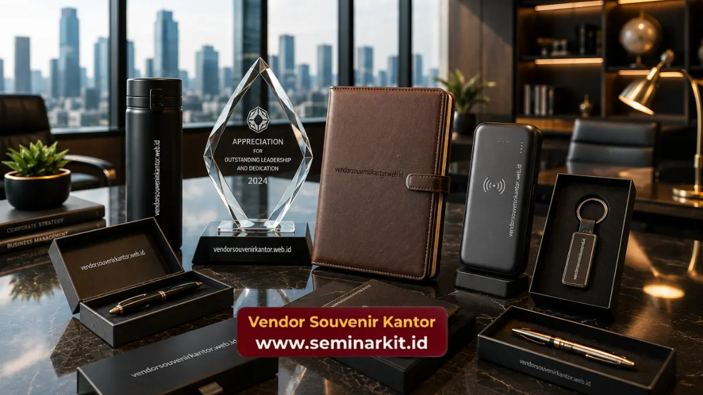

Souvenir kantor elegan untuk mitra bisnis adalah cendera mata korporat bernilai tinggi yang diberikan kepada relasi strategis sebagai simbol apresiasi dan penguatan hubungan kerja sama.
Produk ini umumnya berupa plakat kristal, agenda kulit, pena premium, atau hampers eksekutif dengan desain yang mencerminkan profesionalisme perusahaan.
Vendor Souvenir Kantor menyediakan berbagai pilihan souvenir elegan siap custom logo untuk kebutuhan relasi bisnis Anda.
- Souvenir elegan untuk mitra bisnis berfungsi memperkuat kesan profesional sekaligus mempererat hubungan kerja sama.
- Pemilihan produk sebaiknya disesuaikan dengan level dan konteks hubungan bisnis, mulai dari mitra baru hingga mitra jangka panjang.
- Desain yang minimalis namun berkelas umumnya lebih universal untuk berbagai latar belakang mitra bisnis.
- Personalisasi logo tetap menjadi elemen penting agar souvenir memiliki nilai branding.
- Souvenir jenis ini dapat dipesan secara custom melalui vendor souvenir kantor terpercaya.
Mengapa Souvenir Elegan Penting untuk Mitra Bisnis?
Souvenir elegan penting untuk mitra bisnis karena berfungsi sebagai representasi tidak langsung dari nilai dan kualitas perusahaan.
Ketika sebuah perusahaan memberikan souvenir dengan desain yang matang dan material berkualitas, mitra bisnis cenderung menilai perusahaan tersebut sebagai pihak yang profesional dan menghargai relasi kerja sama secara serius.
Selain aspek kesan, souvenir elegan juga berperan dalam menjaga top of mind awareness. Produk seperti agenda kulit atau pena premium yang digunakan secara rutin oleh mitra bisnis akan terus mengingatkan mereka pada perusahaan pemberi souvenir setiap kali produk tersebut digunakan dalam aktivitas kerja sehari-hari.
Apakah Souvenir Elegan Berbeda untuk Setiap Level Mitra Bisnis?
Souvenir elegan idealnya disesuaikan dengan level mitra bisnis yang dituju. Untuk mitra pada level direksi atau pengambil keputusan utama, produk dengan kesan lebih eksklusif seperti plakat kristal atau agenda kulit penuh cenderung lebih sesuai.
Sementara untuk mitra pada level operasional atau tim teknis, produk yang lebih fungsional seperti pena premium atau tumbler berkualitas dapat menjadi pilihan yang relevan.
Apa Saja Pilihan Souvenir Kantor Elegan untuk Mitra Bisnis?
Terdapat beberapa kategori souvenir yang secara konsisten menjadi favorit untuk diberikan kepada mitra bisnis, baik dalam skala kecil maupun acara formal berskala besar.
Plakat Kristal sebagai Simbol Kerja Sama
Plakat kristal sering dipilih untuk momen formal seperti penandatanganan kontrak atau perayaan milestone kerja sama.
Bentuknya yang dapat diukir dengan nama perusahaan, tanggal kerja sama, dan logo membuat plakat kristal memiliki nilai simbolis yang kuat sebagai kenang-kenangan resmi.
Agenda Kulit sebagai Simbol Profesionalisme
Agenda berbahan kulit tetap menjadi pilihan klasik yang relevan untuk mitra bisnis dari berbagai latar belakang industri.
Selain fungsinya sebagai alat pencatat, tampilan kulit yang premium memberikan kesan serius dan matang, terutama bila dilengkapi emboss logo perusahaan pemberi.
Pena Premium sebagai Hadiah Personal
Pena premium sering dipilih sebagai pelengkap souvenir karena ukurannya yang praktis namun tetap memberikan kesan berkelas.
Produk ini cocok diberikan secara individual kepada perwakilan mitra bisnis dalam pertemuan formal.
Hampers Eksekutif untuk Perayaan Bersama
Untuk momen perayaan bersama, seperti ulang tahun kerja sama atau pencapaian target tahunan, hampers eksekutif yang menggabungkan beberapa produk dalam satu kemasan dapat memberikan kesan yang lebih meriah namun tetap elegan.

Bagaimana Kemasan Mempengaruhi Kesan Souvenir Elegan?
Selain produk itu sendiri, kemasan turut memainkan peran penting dalam membentuk kesan elegan sebuah souvenir bagi mitra bisnis.
Kemasan yang rapi, menggunakan material seperti box kayu, kain beludru, atau kertas premium dengan finishing matte, dapat meningkatkan kesan eksklusif meski produk di dalamnya tergolong sederhana secara ukuran.
Detail kecil pada kemasan, seperti pita, kartu ucapan, atau label dengan identitas perusahaan pemberi, juga dapat memperkuat kesan personal saat souvenir diterima oleh mitra bisnis.
Kesan pertama saat membuka kemasan sering kali menjadi bagian yang tidak kalah penting dibanding produk itu sendiri dalam membangun persepsi profesionalisme perusahaan.
Bagaimana Cara Memilih Souvenir yang Sesuai dengan Konteks Mitra Bisnis?
Pemilihan souvenir yang tepat untuk mitra bisnis sebaiknya mempertimbangkan konteks hubungan, seperti apakah kerja sama masih dalam tahap awal, sedang berjalan, atau telah berlangsung dalam jangka panjang.
Untuk mitra baru, souvenir dengan desain netral dan universal umumnya lebih aman dipilih. Sementara untuk mitra jangka panjang, personalisasi yang lebih spesifik seperti ukiran nama perusahaan mitra dapat memberikan kesan yang lebih personal.
Selain konteks hubungan, latar belakang budaya mitra bisnis juga perlu diperhatikan, terutama bila mitra berasal dari luar negeri.
Desain yang minimalis dan tidak terlalu sarat unsur budaya lokal umumnya lebih diterima secara universal dalam konteks bisnis internasional.
Kesimpulan
Souvenir kantor elegan untuk mitra bisnis merupakan investasi kecil dengan dampak besar terhadap kualitas relasi jangka panjang.
Pemilihan produk yang sesuai dengan level dan konteks mitra bisnis akan memperkuat kesan profesional yang ingin disampaikan perusahaan.
Untuk kebutuhan souvenir elegan bagi mitra bisnis perusahaan Anda, tim Vendor Souvenir Kantor siap membantu proses konsultasi hingga custom logo.
Kunjungi vendorsouvenirkantor.web.id untuk mendapatkan penawaran souvenir yang sesuai dengan kebutuhan relasi bisnis Anda.

Banner promosi: klik gambar untuk langsung terhubung ke WhatsApp tim sales.